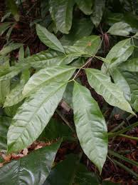

Gnetaceae
Gnetum Family
Gnetaceae is a unique family of gymnosperms containing the single genus Gnetum. Unlike most gymnosperms, its members (mostly tropical vines, shrubs, or trees) possess broad, net-veined leaves resembling those of dicot flowering plants, and their seeds are often enclosed in fleshy, brightly colored structures.
Overview
Gnetaceae is a monogeneric family (containing only the genus Gnetum) within the order Gnetales, a small and enigmatic group of gymnosperms. Gnetales also includes the families Ephedraceae (Ephedra) and Welwitschiaceae (Welwitschia). Gnetaceae comprises about 30-40 species distributed across tropical regions of Asia, Africa, and South America.
Members of Gnetum are remarkable among gymnosperms for possessing several features typically associated with angiosperms (flowering plants). These include broad leaves with reticulate (net-like) venation and the presence of vessel elements in their xylem (wood). Their reproductive structures, while technically strobili (cones), are complex, and the seeds are often enclosed in fleshy, colorful outer layers, mimicking angiosperm fruits (though they are true seeds, not enclosed within an ovary).
These unique characteristics have historically led to debates about the phylogenetic position of Gnetales, though molecular data now generally places them within or sister to conifers, rather than being closely related to angiosperms.
Quick Facts
- Scientific Name: Gnetaceae
- Common Name: Gnetum family
- Genera: 1 (Gnetum)
- Number of Species: Approximately 30-40
- Distribution: Pantropical (Asia, Africa, South America)
- Evolutionary Group: Seed Plants - Gymnosperms - Gnetales
Key Characteristics
Growth Form and Habit
Plants are evergreen vines (lianas), shrubs, or small to medium-sized trees. They possess vessel elements in their secondary xylem, a feature shared with angiosperms but rare among other gymnosperms. Resin canals, common in conifers, are absent.
Leaves
Leaves are simple, entire (smooth margins), relatively large, and broad, with reticulate (net-like) venation, strongly resembling the leaves of dicotyledonous angiosperms. They are arranged oppositely on the stem. This leaf morphology is highly unusual for a gymnosperm.
Reproductive Structures (Strobili)
Plants are typically dioecious (having separate male and female individuals). Reproductive structures are borne in cone-like strobili, which are often arranged in branched, panicle-like clusters arising from leaf axils or nodes.
- Male Strobili (Pollen Cones / Microsporangiate Strobili): Consist of a central axis bearing whorls of collar-like bracts (connate bracts). Above each collar arise numerous male reproductive units ("flowers"), each consisting of 1-2 microsporangia (pollen sacs) on a stalk (microsporangiophore), often surrounded by sterile bract-like structures. Sterile ovules are often present at the apex of the strobilus.
- Female Strobili (Ovulate Cones / Megasporangiate Strobili): Also consist of a central axis with whorls of collar-like bracts. Each collar subtends several ovules. The ovules are naked (not enclosed in an ovary) but are surrounded by three distinct envelopes: an inner integument (forming a micropylar tube), a middle stony layer, and an outer fleshy layer derived from bracts.
Pollination is often aided by insects attracted to nectar droplets produced by both male and female strobili.
Seeds
The seeds are technically naked (as in all gymnosperms), lacking a true fruit wall derived from an ovary. However, the outer envelope surrounding the ovule becomes fleshy and often brightly colored (red, orange, yellow) at maturity, making the seed resemble a drupe or berry. This fleshy layer aids in dispersal by animals.
Chemical Features
Unlike their relatives in Ephedraceae, members of Gnetum typically lack significant amounts of ephedrine alkaloids. They contain various other compounds, including tannins and stilbenoids.
Field Identification
Identifying Gnetaceae (Gnetum) relies on recognizing its unique combination of broad, opposite leaves (angiosperm-like) with gymnosperm reproductive structures.
Primary Identification Features
- Woody Vine, Shrub, or Tree Habit: Evergreen.
- Opposite, Simple, Broad Leaves: Leaves with net-like venation, resembling dicot leaves.
- Reproductive Structures in Strobili: Organized in cone-like structures, often in panicles (not true flowers).
- Dioecious Plants: Male and female structures on separate individuals.
- Seeds Resembling Drupes/Berries: Naked seeds enclosed in a fleshy, often colorful outer envelope.
Secondary Identification Features
- Tropical Distribution: Found in tropical forests of Asia, Africa, South America.
- Absence of Resin Canals: Wood lacks the resin typical of conifers.
- Vessel Elements in Wood: Anatomical feature shared with angiosperms.
Seasonal Identification Tips
Observe throughout the year:
- Vegetative Features: The opposite, broad, net-veined leaves are the most distinctive feature and are present year-round. Habit (vine vs. tree) is also key.
- Reproductive Season: Strobili (male or female) appear seasonally. Look for the characteristic whorled bracts and enclosed ovules or microsporangia.
- Fruiting Season: Mature seeds with their fleshy, colorful outer layers are conspicuous when present.
Common Confusion Points
The angiosperm-like leaves can cause confusion:
- Dicot Angiosperms (various families): Many dicot vines and trees have opposite, simple, broad leaves. However, they will possess true flowers (with distinct calyx, corolla, ovary) and true fruits (developing from an ovary), rather than strobili and fleshy-coated seeds.
- Other Gymnosperms: Most other gymnosperms lack broad, net-veined leaves. Conifers typically have needles or scales and woody cones. Cycads have large, pinnately compound, palm-like leaves. Ginkgo has distinctive fan-shaped leaves.
- Other Gnetales: Ephedra has highly reduced, scale-like leaves and distinct strobili. Welwitschia is unmistakable with only two massive, strap-like leaves.
Field Guide Quick Reference
Look For:
- Woody vine, shrub, or tree
- Opposite, simple, broad leaves (net-veined)
- Reproductive structures in strobili (cone-like)
- Dioecious (separate male/female plants)
- Seeds enclosed in fleshy, colorful layer
- Tropical distribution
Key Distinctions:
- Not true flowers (no ovary)
- Not true fruits (naked seeds)
- Leaves unlike typical gymnosperms
Notable Examples
All examples belong to the single genus Gnetum.

Gnetum gnemon
Melinjo / Gnemon
A small to medium-sized tree native to Southeast Asia and the western Pacific. It is widely cultivated for its edible seeds (used to make 'emping' crackers) and young leaves/strobili used as vegetables. Its leaves clearly show the dicot-like appearance. Seeds are red/orange when ripe.

Gnetum africanum
African Jointfir / Eru
A climbing vine native to rainforests of Central Africa. Its leaves are harvested extensively from the wild and used as a popular vegetable (eru or afang soup). Overharvesting is a conservation concern. It has typical broad leaves and produces fleshy seeds.

Gnetum montanum
(Mountain Gnetum)
A species found in mountainous regions from the Himalayas through Southeast Asia. It can be a vine or shrub. Like other species, it has opposite, broad leaves and produces strobili, with seeds enclosed in a fleshy red layer when mature.
Phylogeny and Classification
Gnetaceae belongs to the order Gnetales, one of the four extant divisions of gymnosperms. The Gnetales (Gnetaceae, Ephedraceae, Welwitschiaceae) are morphologically distinct from other gymnosperms and possess some features convergent with angiosperms (vessels, aspects of reproduction). This led to the historical "anthophyte hypothesis," suggesting Gnetales were the closest relatives to flowering plants.
However, most modern molecular phylogenetic studies contradict this, instead placing Gnetales either as sister to the Pinaceae family within conifers ("Gnepine" hypothesis) or sister to all conifers, or sometimes even nested deeper within conifers. Regardless of the exact placement, Gnetales represents a unique and ancient lineage of seed plants.
Position in Plant Phylogeny
- Kingdom: Plantae
- Clade: Embryophytes (Land Plants)
- Clade: Tracheophytes (Vascular Plants)
- Clade: Spermatophytes (Seed Plants)
- Group: Gymnosperms
- Order: Gnetales
- Family: Gnetaceae
- Genus: Gnetum
Evolutionary Significance
Gnetaceae and the Gnetales are highly significant for understanding seed plant evolution:
- Unique Trait Combination: Exhibits a mosaic of gymnosperm features (naked ovules) and angiosperm-like features (vessels, broad leaves, aspects of double fertilization), sparking debate about evolutionary pathways.
- Phylogenetic Puzzle: The uncertain relationship of Gnetales to other seed plant groups highlights complexities in reconstructing deep evolutionary history.
- Tropical Gymnosperm Diversity: Represents a significant component of gymnosperm diversity in tropical ecosystems, contrasting with the mostly temperate distribution of conifers.
- Convergent Evolution: Features like broad leaves and insect pollination demonstrate convergent evolution with angiosperms.